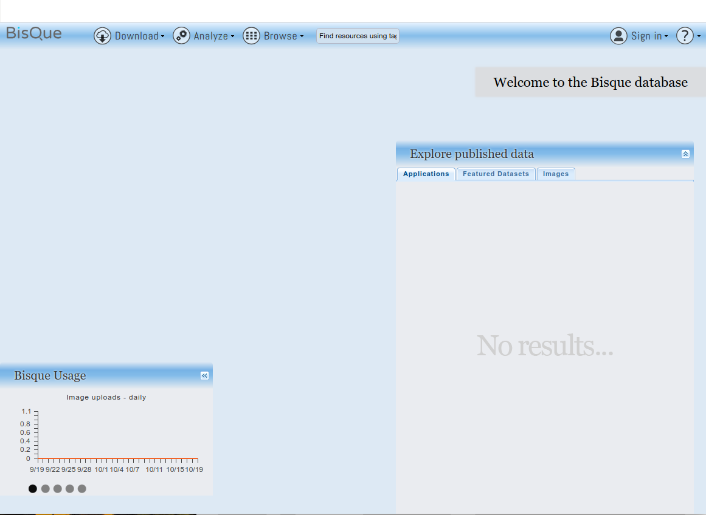
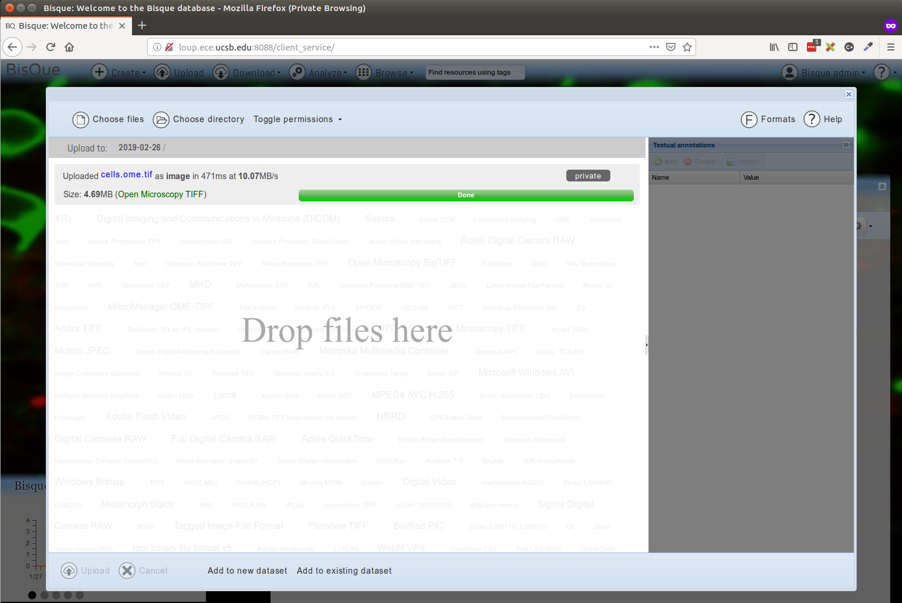
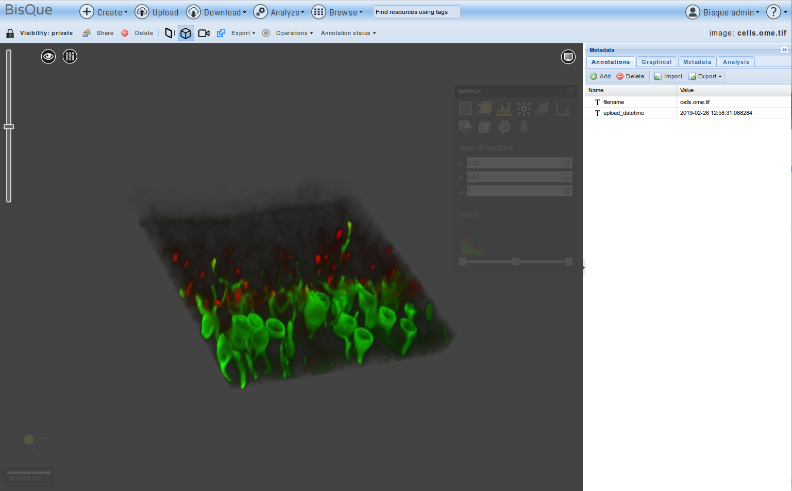
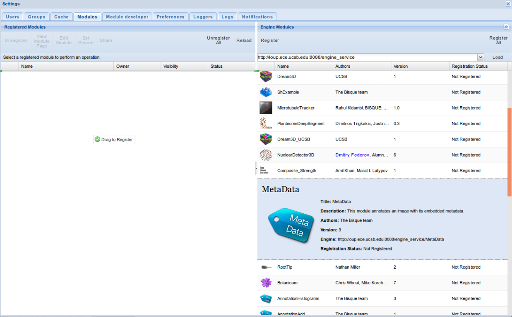
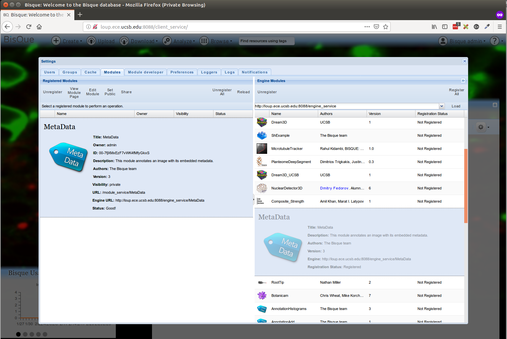
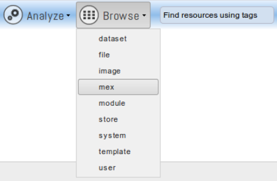
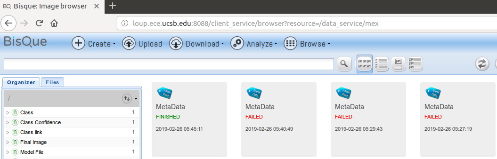
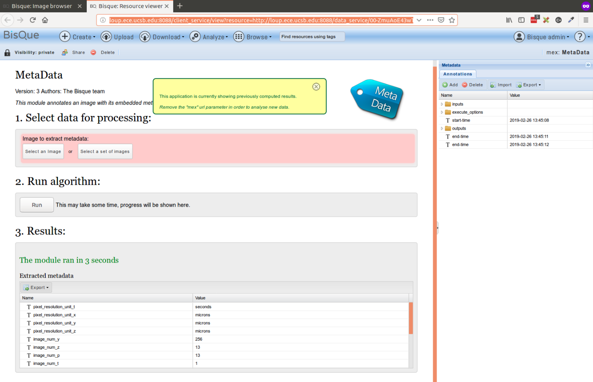
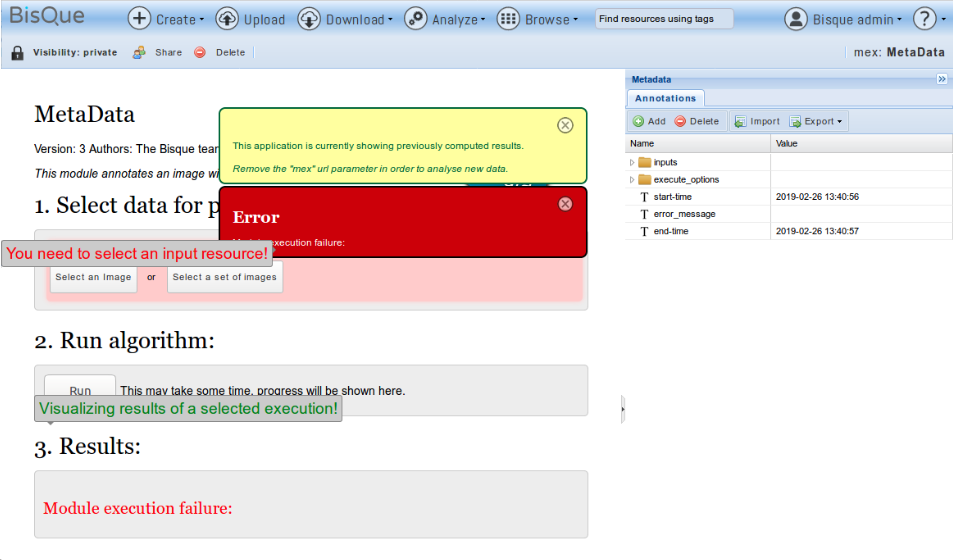
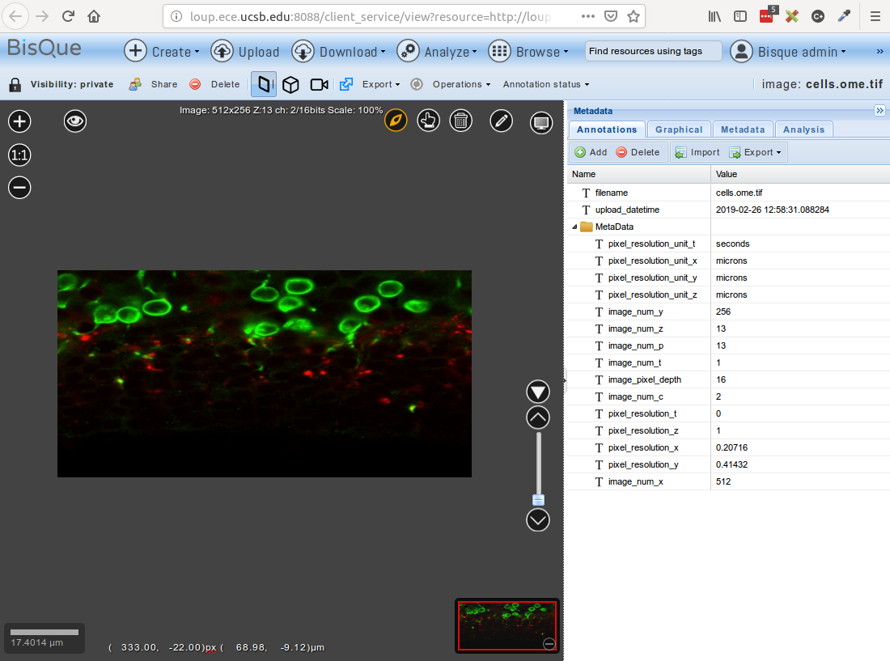

4.1 Source Code Installation
NOTE: The source code installation has only been tested on
Ubuntu 16.04.
Pre-requisites
sudo apt-get install -y python python-dev python-virtualenv python-numpy python-scipy
sudo apt-get install -y libxml2-dev libxslt1-dev libhdf5-dev
sudo apt-get install -y libmysqlclient-dev libpq-dev mercurial git cmake
sudo apt-get install -y postgresql postgresql-client libsqlite3-dev
sudo apt-get install -y python-paver python-setuptools
sudo apt-get install -y graphviz libgraphviz-dev pkg-config
sudo apt-get install -y openslide-tools python-openslide
sudo apt-get install -y libfftw3-dev libbz2-dev libz-dev
sudo apt-get install -y liblcms2-dev libtiff-dev libpng-dev
sudo apt-get install -y libgdcm2.6 libopenslide-dev libopenslide0Install Openjpeg
git clone https://github.com/uclouvain/openjpeg
cd openjpeg && mkdir build && cd build
cmake .. -DCMAKE_BUILD_TYPE=Release
sudo make -j4 install
sudo ldconfigInstall BioImageConvert
- BioImageConvert Source Repository
- Prebuilt Binaries Repository
- Setup for pre-built binaries (below)
# Ubuntu 18 version
wget https://bitbucket.org/dimin/bioimageconvert/downloads/imgcnv_ubuntu18_2.5.0.tar.gz
# Ubuntu 16 version
wget https://bitbucket.org/dimin/bioimageconvert/downloads/imgcnv_ubuntu16_2.4.3.tar.gz
tar -xvzf imgcnv_ubuntu16_2.4.3.tar.gz
sudo cp imgcnv_ubuntu16_2.4.3/imgcnv /usr/local/bin/
sudo cp imgcnv_ubuntu16_2.4.3/libimgcnv.so.2.4.3 /usr/local/lib/
sudo ln -s /usr/local/lib/libimgcnv.so.2.4.3 /usr/local/lib/libimgcnv.so.2.4
sudo ln -s /usr/local/lib/libimgcnv.so.2.4 /usr/local/lib/libimgcnv.so.2
sudo ln -s /usr/local/lib/libimgcnv.so.2 /usr/local/lib/libimgcnv.so
sudo ldconfigAlternately, Compile by source and Install (You are on your own here)
Clone the repository and Prepare Virtual Environment
We will clone the stable repository and work inside a python virtual environment for setup requirements.
- Its always a good practive to use a virtualenv to develop projects
- Edit ~/.bashrc and export the following variables
- In case of issues around virtualenvwrapper make sure the paths in the variables below exist
# virtualenv and virtualenvwrapper
export PATH=/usr/local/bin:$PATH
export VIRTUALENVWRAPPER_PYTHON=/usr/bin/python
export VIRTUALENVWRAPPER_VIRTUALENV=/usr/local/bin/virtualenv
source /usr/local/bin/virtualenvwrapper.sh- Now load this using “source ~/.bashrc”
- Create a virtual envrionment “mkvirtualenv -p /usr/bin/python2 bqdev”
- Change environment “workon bqdev”
__Deprecated Bootstrap Installer (Do Not Use this Script)_ _
$ mkdir bisque && cd bisque
$ wget http://biodev.ece.ucsb.edu/projects/bisquik/export/tip/bisque-stable/contrib/bootstrap/bisque-bootstrap.py
$ python bisque-bootstrap.py bqenv
# Activate Virtualenv
bisque$ source bqenv/bin/activate- Now Install requirements
pip install -i https://biodev.ece.ucsb.edu/py/bisque/xenial/+simple/ -r requirements.txt
Alternate Index Url for Development: https://biodev.ece.ucsb.edu/py/bisque/dev/+simple
Index Url Debian Stretch: https://biodev.ece.ucsb.edu/py/bisque/stretch/+simple/
Index Url Ubuntu xenial: https://biodev.ece.ucsb.edu/py/bisque/xenial/+simple/- Fix the requirements.txt (Only if the installation fails)
#Fix the requirements.txt file using sed -i 's/.*psycopg2==2.6.1.*/psycopg2==2.7.1./' requirements.txt
psycopg2==2.7.1
Minimatic==1.0
Paste==1.7.5.1
httplib2==0.7.3
#tgext.registration==0.1dev
# Install separately since packages may be deprecated in PyPi
easy_install http://biodev.ece.ucsb.edu/binaries/depot/tgext.registration2/tgext.registration2-0.5.2.tar.gzConfigure Bisque Environment
- Run the Paver setup
- Expected paver log tail
Installing collected packages: bqengine
Running setup.py develop for bqengine
Successfully installed bqengine
Now run:
bq-admin setup - Run the bq-admin standalone setup
- Expected bq-admin setup log tail (also observe the various inputs in the log for this setup)
(bqdev) rahul@loup:~/repository/github/bisque$ bq-admin setup
INFO:root:Generating grammar tables from /usr/lib/python2.7/lib2to3/Grammar.txt
INFO:root:Generating grammar tables from /usr/lib/python2.7/lib2to3/PatternGrammar.txt
Developer installation
DIRS: {'bin': '/home/rahul/.virtualenvs/bqdev/bin', 'run': '.', 'share': '.', 'plugins': './plugins', 'packages': '/home/rahul/.virtualenvs/bqdev/lib/python2.7/site-packages', 'data': './data', 'virtualenv': '/home/rahul/.virtualenvs/bqdev', 'default': './config-defaults', 'jslocation': 'bqcore', 'modules': './modules', 'depot': './external', 'config': './config', 'public': './public'}
INFO:root:Generating grammar tables from /usr/lib/python2.7/lib2to3/Grammar.txt
INFO:root:Generating grammar tables from /usr/lib/python2.7/lib2to3/PatternGrammar.txt
Developer installation
DIRS: {'bin': '/home/rahul/.virtualenvs/bqdev/bin', 'run': '.', 'share': '.', 'plugins': './plugins', 'packages': '/home/rahul/.virtualenvs/bqdev/lib/python2.7/site-packages', 'data': './data', 'virtualenv': '/home/rahul/.virtualenvs/bqdev', 'default': './config-defaults', 'jslocation': 'bqcore', 'modules': './modules', 'depot': './external', 'config': './config', 'public': './public'}
This is the main installer for Bisque
The system will initialize and be ready for use after a succesfull
setup has completed.
Several questions must be answered to complete the install. Each
question is presented with default in brackets []. Pressing
<enter> means that you are accepting the default value. You may
request more information by responding with single '?' and then <enter>.
For example:
What is postal abbreviation of Alaska [AK]?
The default answer is AK and is chosen by simply entering <enter>
Beginning install of ['bisque', 'engine'] with ['server']
CALLING <function install_external_binaries at 0x7f9533ffac08>
Fetch external binary files from Bisque development server [Y]? Y
Matched section Linux-64bit-*
extjs.zip found locally
bioformats-pack.zip found locally
libmbgl-linux-64-large.a found locally
feature_extractors.zip found locally
ImarisConvert.tar.gz found locally
opencv-2.4.6.zip found locally
CALLING <function install_dependencies at 0x7f9533ffad70>
2.4.3
Found imgcnv version 2.4.3
Imgcnv is installed and no-precompiled version exists. Using installed version
ImarisConvert is up to date
No pre-compiled version of openslide exists for your system
Please visit our mailing list https://groups.google.com/forum/#!forum/bisque-bioimage for help
Bioformats is up to date
CALLING <function install_features at 0x7f9533ffb050>
Install feature extractors (Feature Server) [Y]?
Unpacking ./external/feature_extractors.zip into ./bqfeature/bq
Install source code for feature extractors [N]?
To enable the feature service to read OME-bigtiff for feature extraction install
libtiff4
For Debian use the command apt-get install libtiff5-dev
Install OpenCV-2.4.6 [Y]?
Extracted opencv-2.4.6/python2.7/cv.py -> /home/rahul/.virtualenvs/bqdev/lib/python2.7/site-packages/cv.py
Extracted opencv-2.4.6/python2.7/cv2.so -> /home/rahul/.virtualenvs/bqdev/lib/python2.7/site-packages/cv2.so
CALLING <function install_plugins at 0x7f9533ff9b18>
Try to install plugins [Y]?
INFO 'svn'not found: cannot fetch source repositories with svn
INSTALL PLGINS ['./plugins']
Checking ./plugins for modules
CALLING <function install_public_static at 0x7f9533ffa848>
Deploy all static resources to public directory [Y]?
Creating ./public
INFO:bq.image_service.server:Available converters: openslide (1.1.1), imgcnv (2.4.3), ImarisConvert (8.0.2), bioformats (5.1.1)
Problem loading registration = bq.registration.controllers.registration_service: 'User'
Generating packaged JS and CSS files
INFO:minimatic:Combined -> ./public/core/css/all_css.css:
INFO:minimatic:Combined -> ./public/core/js/all_js.js:
CALLING <function install_server_defaults at 0x7f9533ffa410>
Server config
Top level site variables are:
bisque.admin_email=YourEmail@YourOrganization
bisque.admin_id=admin
bisque.organization=Your Organization
bisque.paths.root=.
bisque.server=http://0.0.0.0:8088
bisque.title=Image Repository
Change a site variable [N]? Y
Enter the root URL of the server [http://0.0.0.0:8088]? http://loup.ece.ucsb.edu:8080
Your real name administrator account []?
A login ID for the administrator account [admin]?
An email for the administrator [YourEmail@YourOrganization]?
A small organization title for the main page [Your Organization]?
The main title for the web page header [Image Repository]?
Installation Directory [.]?
Do you want to create new server configuations [Y]?
{'backend': 'paster',
'e1.bisque.has_database': 'false',
'e1.bisque.static_files': 'false',
'e1.services_enabled': 'engine_service',
'e1.url': 'http://0.0.0.0:27000',
'h1.bisque.static_files': 'true',
'h1.services_disabled': '',
'h1.services_enabled': '',
'h1.url': 'http://0.0.0.0:8088',
'servers': 'h1'}
The server agent for bisque [paster]?
list of server entries to be configured [h1]?
Install (update) paster configs (application server and configs) [Y]?
PARAMS {'h1.bisque.static_files': 'true', 'h1.services_enabled': '', 'e1.bisque.has_database': 'false', 'h1.url': 'http://0.0.0.0:8088', 'servers': 'h1', 'h1.services_disabled': '', 'e1.url': 'http://0.0.0.0:27000', 'e1.bisque.static_files': 'false', 'e1.services_enabled': 'engine_service', 'backend': 'paster'}
h1: the url of the server [http://0.0.0.0:8088]? http://loup.ece.ucsb.edu:8080
h1: Services enabled []?
h1: Services disabled []?
Created paster config: ./config/h1_paster.cfg
CALLING <function install_mail at 0x7f9533ffa758>
Enable mail delivery [Y]? N
CALLING <function install_secrets at 0x7f9533ffa8c0>
Encrypt cookies with secret phrase [CEMWOJ65]?
CALLING <function install_database at 0x7f9533ff9578>
A database URI [sqlite:///data/bisque.db]?
Trying to import driver sqlite3...
Driver successfully imported.
Create and initialize database [Y]?
A database URI [sqlite:///data/bisque.db]?
Checking whether database "data/bisque.db" already exists...
Yes, it exists.
Upgrading database version (alembic)
INFO [alembic.migration] Context impl SQLiteImpl.
INFO [alembic.migration] Will assume non-transactional DDL.
CALLING <function install_preferences at 0x7f9533ffa7d0>
Initialize Preferences [Y]?
Force initialization [N]?
INFO:bq.config:DATABASE sqlite:///data/bisque.db
INFO:bq.config:SQLLite special handling NullPool timoout
INFO:bq.image_service.server:Available converters: openslide (1.1.1), imgcnv (2.4.3), ImarisConvert (8.0.2), bioformats (5.1.1)
INFO:bq.blobs.mounts:Loaded drivers OrderedDict([('local', {'top': 'file://$datadir/imagedir/', 'mounturl': 'file://$datadir/imagedir/$user/'})])
WARNING:bq.blobs.mounts:SQLITE does not support subtransactions: some mount service operations will fail
INFO:bq.blobs.plugins:Resource plugins: ['(bisque_pipeline, bq)', '(cellprofiler_pipeline, cppipe)', '(cellprofiler_pipeline, cp)', '(dream3d_pipeline, json)', '(imagej_pipeline, ijm)', '(text, asc)', '(text, ascii)', '(text, zw)', '(text, hz)', '(text, txt)', '(text, utxt)', '(text, utf8)', '(table, csv)', '(table, hdf)', '(table, hdf5)', '(table, h5)', '(table, he5)', '(table, h5ebsd)', '(table, dream3d)', '(table, csv)', '(table, xls)', '(table, xlsx)']
WARNING:bq.service:Following service were not found: set(['mnt'])
/home/rahul/.virtualenvs/bqdev/local/lib/python2.7/site-packages/sqlalchemy/sql/sqltypes.py:226: SAWarning: Unicode type received non-unicode bind param value 'system'. (this warning may be suppressed after 10 occurrences)
(util.ellipses_string(value),))
NO ACTION: System object initialized at <system created="2019-02-04T10:51:57.823907" name="system" owner="http://localhost/data_service/00-2jimYQLLjB3yy3HuTwQM5c" permission="published" resource_uniq="00-UAZfWJYjDKp4yhabV3PP7S" ts="2019-02-04T10:51:57.823907" uri="http://localhost/data_service/00-UAZfWJYjDKp4yhabV3PP7S"/>
Problem initializing preferences.. please use bq-admin preferences
Initialize your database with:
$ bq-admin setup createdb
You can start bisque with:
$ bq-admin server start
then point your browser to:
http://loup.ece.ucsb.edu:8080
If you need to shutdown the servers, then use:
$ bq-admin server stop
You can login as admin and change the default password.
Send Installation/Registration report [Y]? N
(bqdev) rahul@loup:~/repository/github/bisque$
- Add “config/runtime-bisque.cfg” for module configuration and docker image registry
- Edit and add run config from config-defaults/runtime-bisque.defaults to config/runtime-bisque.cfg
- Here are some local changes but requires docker to be setup
runtime.platforms = command
runtime.staging_base = staging/
[docker]
docker.enabled = true
# A hub where to push containers to
docker.hub = biodev.ece.ucsb.edu:5000Run Bisque Server
Start/Stop the server
$ bq-admin server start $ bq-admin server stopOverview of Installation (Just for review)
workon bqdev paver setup [server|engine] bq-admin setup [server|engine] bq-admin deploy public
Open in browser 
Upload Dataset
Upload an image file from your local directory to Bisque 
Browse uploaded dataset in the file explorer
- Select Browse menu item in the navigation bar and click on dataset
- Thereafter click on the files tab and click through the local database folder in the left document tree section.

Upload Image file
Select the uploaded file to view
- This visualization is by default 2D in nature.
- The various slices can be stepped through or played using the scroll bar on righ bottom of the image view area

View 2D Image file
- A 3D visualization can be explored by clicking the cube icon towards the right of share and delete icons on the tool bar right below the navigation bar.
View 3D Image file
Module
Load/Install Module packages and dependencies
Lets take module/MetaData code as an example.
- Ensure ~/bisque/config/runtime-bisque.cfg has the configuration as below
- Make sure the runtime-module.cfg is as per below
module_enabled = True
runtime.platforms=command
[command]
environments = Staged
executable = python MetaData.py
files = MetaData.py- Now build/compile this module
Open up the Bisque web interface at http://loup.ece.ucsb.edu:8088
- Login using admin:admin
- Update the email address in the users context menu item (This is important)
- Open Module Manager from the admin user context menu
- Paste the following URL in the Module->Engine Module
http://loup.ece.ucsb.edu:8088/engine_service/List of engine modules could be seen
Drag-n-Drop say MetaData module from the list to the left window and close the window
 
Debug Module
- Every module run will generate a model execution identifier to track this execution. You can observe this after clicking the run command and you have a result. It could be success or fail in the Results section
http://loup.ece.ucsb.edu:8088/module_service/MetaData/?wpublic=1#mex=http://loup.ece.ucsb.edu:8088/module_service/mex/00-ZmuAoE43wTxByycmaCnvBF- The mex identifier (==MEX_ID=00-ZmuAoE43wTxByycmaCnvBF==) observed from URL can be used to locate this execution code & resulting logs in the staging folders
- change directory to this staging folder and observe the files there
cd ~/bisque/staging/00-ZmuAoE43wTxByycmaCnvBF
rahul@loup:~/bisque/staging/00-ZmuAoE43wTxByycmaCnvBF$ tree
.
├── MetaData.log
├── MetaData.py
├── python.log
└── state00-ZmuAoE43wTxByycmaCnvBF.bq
0 directories, 4 files- Here we can see that the MetaData.log and python.log files are generated
- In case of issues these are the log files that we need to look into for detailed error reporting
- main log file is the bisque_8088.log file at the ~/bisque home directory
13:45:11,996 INFO [bq.root] [admin] POST http://loup.ece.ucsb.edu:8088/module_service/mex/00-ZmuAoE43wTxByycmaCnvBF?view=short
13:45:12,001 INFO [bq.module_server] MEX APPEND http://loup.ece.ucsb.edu:8088/module_service/mex/00-ZmuAoE43wTxByycmaCnvBF?view=short
13:45:12,205 INFO [bq.engine_service.command_run] SUCCESS Command python MetaData.py http://loup.ece.ucsb.edu:8088/data_service/00-6dpWgEAue2iz8YZcKPHejh http://loup.ece.ucsb.edu:8088/module_service/mex/00-ZmuAoE43wTxByycmaCnvBF admin:00-ZmuAoE43wTxByycmaCnvBF with 0
13:45:12,206 INFO [bq.engine_service.command_run] All processes have returned ['finished']
13:45:12,206 INFO [bq.engine_service.command_run] finishing 1 mexes -> [{'files': ['MetaData.py'], 'status': 'finished', 'executable': ['python', 'MetaData.py', 'http://loup.ece.ucsb.edu:8088/data_service/00-6dpWgEAue2iz8YZcKPHejh', 'http://loup.ece.ucsb.edu:8088/module_service/mex/00-ZmuAoE43wTxByycmaCnvBF', 'admin:00-ZmuAoE43wTxByycmaCnvBF'], 'initial_dir': '/home/rahul/repository/github/bisque-dev', 'module_enabled': 'True', 'named_args': {'bisque_token': 'admin:00-ZmuAoE43wTxByycmaCnvBF', 'image_url': 'http://loup.ece.ucsb.edu:8088/data_service/00-6dpWgEAue2iz8YZcKPHejh', 'mex_url': 'http://loup.ece.ucsb.edu:8088/module_service/mex/00-ZmuAoE43wTxByycmaCnvBF'}, 'bisque_token': u'admin:00-ZmuAoE43wTxByycmaCnvBF', 'environments': 'Staged', 'runtime.staging_base': 'staging/', 'mex_id': '00-ZmuAoE43wTxByycmaCnvBF', 'runtime.matlab_launcher': 'config-defaults/templates/matlab_launcher_SYS.tmpl', 'arguments': [], 'module_dir': '/home/rahul/repository/github/bisque-dev', 'staging_path': '/home/rahul/repository/github/bisque-dev/staging/00-ZmuAoE43wTxByycmaCnvBF', 'iterables': False, 'log_name': '/home/rahul/repository/github/bisque-dev/staging/00-ZmuAoE43wTxByycmaCnvBF/python.log', 'runtime.matlab_home': '', 'mex_url': 'http://loup.ece.ucsb.edu:8088/module_service/mex/00-ZmuAoE43wTxByycmaCnvBF', 'rundir': '/home/rahul/repository/github/bisque-dev/staging/00-ZmuAoE43wTxByycmaCnvBF', 'runtime.platforms': 'command'}]- This will show us the COMMAND that was run to execute this module with MEX_URL
python MetaData.py \
http://loup.ece.ucsb.edu:8088/data_service/00-6dpWgEAue2iz8YZcKPHejh \
http://loup.ece.ucsb.edu:8088/module_service/mex/00-ZmuAoE43wTxByycmaCnvBF \
admin:00-ZmuAoE43wTxByycmaCnvBF- This is the command that we can use to debug and rerun/replay this MEX in order to update the execution result. This is different from running the module again from the web interface since that will produce a new MEX_ID and create another staging folder corresponding to that.
G. Module MEX/UI
Click on Browse->mex to go to the Model execution page
Mex Module
Mex Browse
Here we will be able to see the various MEX sessions that were run for all modules under execution
We will be able to obtain the MEX_ID and view its state from here by selecting one of the executions of interest.
Mex Success Module
In case we select a module that has errors in it then it would turn out to show the status with messages in red
Mex Success Module
Now let us go to Browse->dataset and select the file that we ran the module for. Here we will be able to view the Annotation that was added by the Metadata module to this image.
- Annotation can be visualized using the “Annotations” tab on the right
Data Annot Module
- The Model execution runs can be seen in the “Analysis” tab on the right

Data Mex Module
Further
Docker & Condor based modules require additional setup
- Install Docker (https://docs.docker.com/install/linux/docker-ce/ubuntu/)
- Also go through the post-installation steps
- Also install the Nvidia-docker in case you are planning to use GPU based modules or connoisseur services.
- Install Condor (https://research.cs.wisc.edu/htcondor/ubuntu/)
- Understand the configurations as well for master & slave setup
- Bisque Condor Setup Instructions
rahul@bqdev:~$ /etc/init.d/condor restart [ ok ] Restarting condor (via systemctl): condor.service. rahul@bqdev:~$ ps -ef | grep condor